Buscaminas
El Buscaminas es un juego de lógica en el que el objetivo es despejar un campo minado sin detonar ninguna mina, utilizando pistas numéricas para localizar las minas.
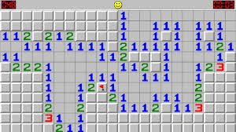
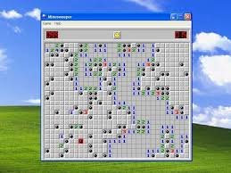
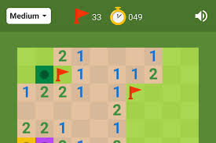
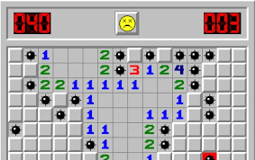
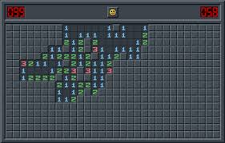
Nom
Valoració
Comentari
Laura
5
Juego clásico que siempre engancha.
Sofía
3
Cuando llevas 10 partidas, se vuelve aburrido.

 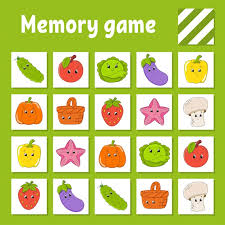
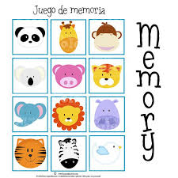
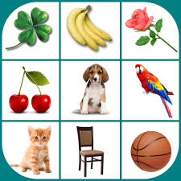
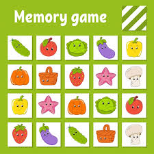
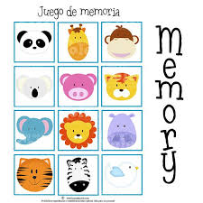
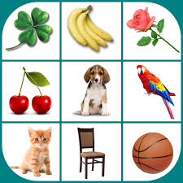